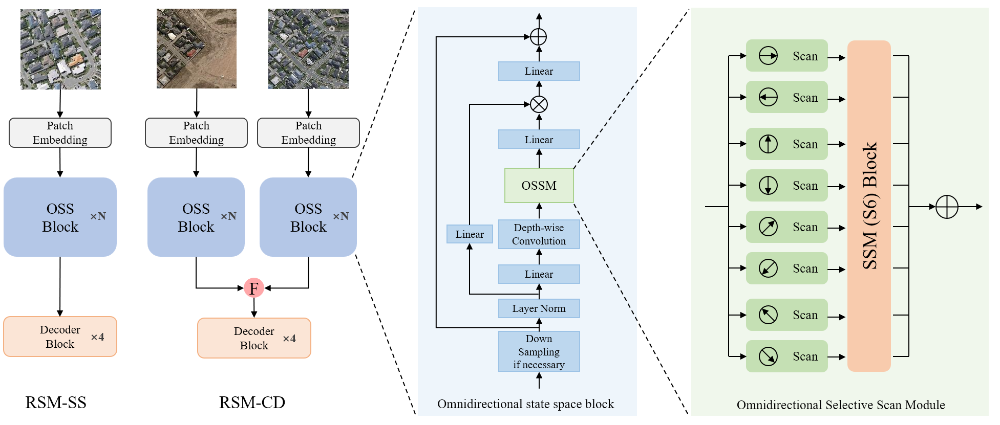
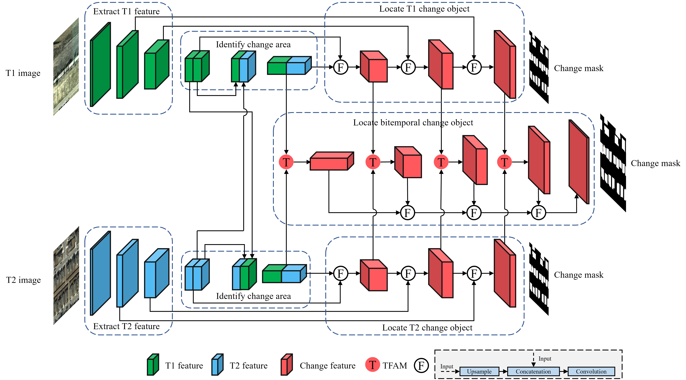

赵思杰 |
|  |
[2] RS-Mamba for Large Remote Sensing Image Dense Prediction
S. Zhao, H. Chen, X. Zhang, P. Xiao, L. Bai and W. Ouyang, [Arxiv][Code] |
|  |
[1] Exchanging Dual Encoder-Decoder: A New Strategy for Change Detection with Semantic Guidance and Spatial Localization
S. Zhao, H. Chen, X. Zhang, P. Xiao, IEEE Transactions on Geoscience and Remote Sensing (TGRS), 2023. (SCI Q1 TOP, IF=8.2) [Arxiv, TGRS][Code] |